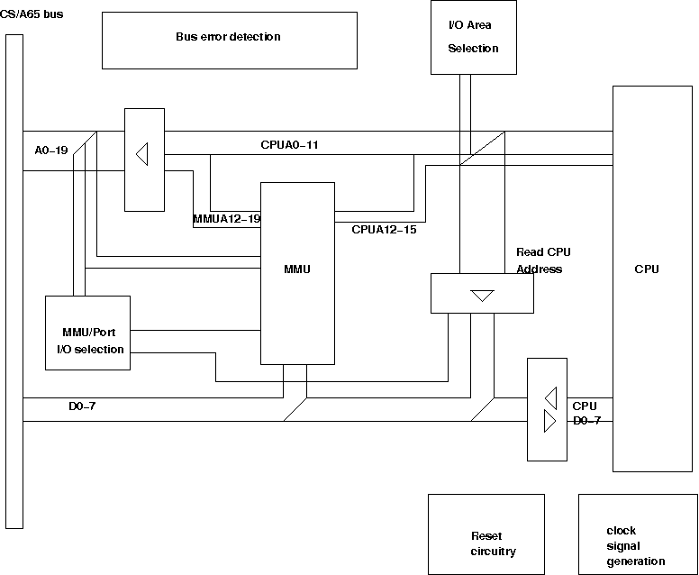

CS/A65 CPU
This board implements the main 6502 CPU board.
It extends the 6502 cpu with a memory management unit (MMU)
to achieve a 1 MByte address space. The board also contains
the reset circuit, addressing logic for the I/O address space,
clock and dRAM signal generation (2Phi2), bus drivers,
and - in the newer versions - bus error detection circuits.
Status: prototype
Notes
 |
Version 2.0H implements all the features mentioned
above. There is an Eagle(tm) schematics and
also layout available. The schematics and layout
are not yet tested in a prototype board.
|
|
This board has not yet been tested.
|
|
The TTL types are mostly 'ALS technology, which is
faster and less power-hungry than 'LS. In one place,
however, I needed to fall back to 'LS: IC3 is still
a 74LS245 instead of a 74ALS245, as it seemed that
the 6522 on the PETIO
board did not like it. Don't ask me why, I don't know.
|
|
This board implements new features, in that bus
errors like writing on a write protected page,
accessing a page that is not mapped, and also
fetching an opcode from a "no-execute" page! This
feature is similar to the new feature implemented
in the PC processors, to protect from buffer overflows.
|
Files
Status: prototype with bugs
Notes
|
Version 2.0G implements all the features mentioned
above. There is an Eagle(tm) schematics and
also layout available. The schematics and layout
are tested in a prototype board.
|
|
This version has a severe bug (that can be fixed,
though): the mmu inputs RS0-RS3 are connected to
the BUSA0-BUSA3 in the wrong order. Due to the way
the address bits are connected, it should have RS0
connected to BUSA3 and so on.
|
Files
Status: ok
Notes
|
This version implements an additional
write protection circuit. I.e. an additional
mmu bit is used to disable the memory access
to the selected memory.
|
|
This schematics is only available
as a "diff" to the 1.2C version.
|
Files
Status: ok
Notes
|
This is the original cpu board. It implements
most features, but not the bus error detection
circuits.
|
Files

Block diagram of the cpu board. It shows the MMU,
but also the port to read the CPU address.
Please note that the MMU and the port can be
accessed from the bus alone, if the cpu is decoupled
from the bus with the drivers. This can be used
when the cpu is stopped with the RDY e.g. by
a bus error.


{kind=link}
{kind=link}

{kind=link}
{kind=link}
{kind=link}
{kind=link}
{kind=link}
{kind=link}